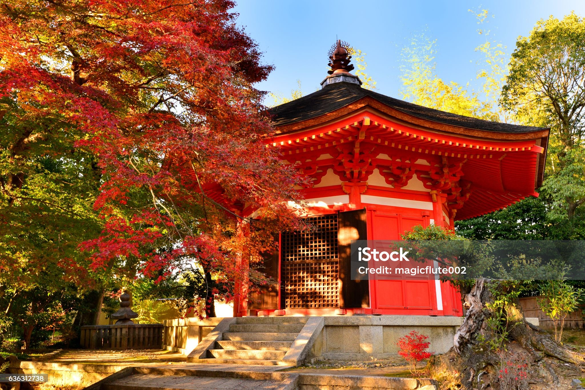

Kyoto (京都, Kyōto) is Japan’s oldest city and served as the nation’scapital and the emperor’s residence for over 1,000 years, from 794 until 1868.Over the centuries, the city has been destroyed by many wars and fires, however, because of its cultural and historical value Kyoto was largely spared by the WWII bombings. It is for this reason that you can still visit many old cultural landmarks and historical sites. And because of the preserved townscape, you will find many people walking around in a beautiful kimono (traditional Japanese clothing) in Kyoto! If you want to try on a kimono and explore the city, you can easily find some kimono rental shops in Kyoto to complete the look to match the historical sites
Kyto is a beautiful city of japan
Kyoto is a beautiful , city
22is four
Chemical formula of water is H2O
KCGI
The Ktyoto College of Graduate Study for Infromatic
Hyakumanben Main Campus
Kyoto,Jpana
Laptop Price
Old Price:500
New Price:$400
Kyoto (京都, Kyōto) is Japan’s oldest city and served as the nation’s capital and the emperor’s residence for over 1,000 years, from 794 until 1868. Over the centuries, the city has been destroyed by many wars and fires, however, because of its cultural and historical value Kyoto was largely spared by the WWII bombings. It is for this reason that you can still visit many old cultural landmarks and historical sites. And because of the preserved townscape, you will find many people walking around in a beautiful kimono (traditional Japanese clothing) in Kyoto! If you want to try on a kimono and explore the city, you can easily find some kimono rental shops in Kyoto to complete the look to match the historical sites
Kyoto (京都, Kyōto) is Japan’s oldest city and served as the nation’s capital and the emperor’s residence for over 1,000 years, from 794 until 1868. Over the centuries, the city has been destroyed by many wars and fires, however, because of its cultural and historical value Kyoto was largely spared by the WWII bombings. It is for this reason that you can still visit many old cultural landmarks and historical sites. And because of the preserved townscape, you will find many people walking around in a beautiful kimono (traditional Japanese clothing) in Kyoto! If you want to try on a kimono and explore the city, you can easily find some kimono rental shops in Kyoto to complete the look to match the historical sites
My Favroite color is red Green
Kyoto (京都, Kyōto) is Japan’s oldest city and served as the nation’scapital and the emperor’s residence for over 1,000 years, from 794 until 1868.Over the centuries, the city has been destroyed by many wars and fires, however, because of its cultural and historical value Kyoto was largely spared by the WWII bombings. It is for this reason that you can still visit many old cultural landmarks and historical sites. And because of the preserved townscape, you will find many people walking around in a beautiful kimono (traditional Japanese clothing) in Kyoto! If you want to try on a kimono and explore the city, you can easily find some kimono rental shops in Kyoto to complete the look to match the historical sites
Mona Lisa is a painting by leonardo Da Vinchi
Facorite spoet
Favorite players
Favorite Sports and Players